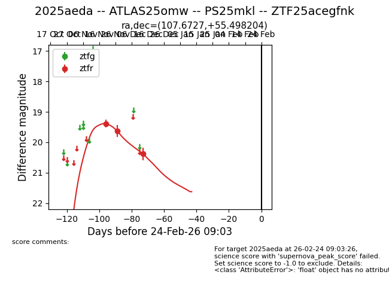
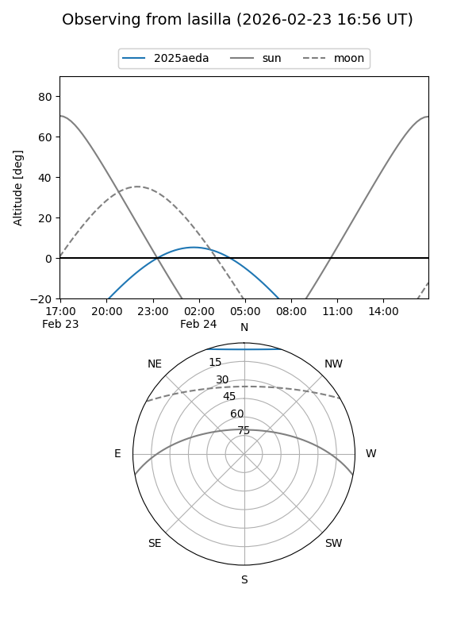
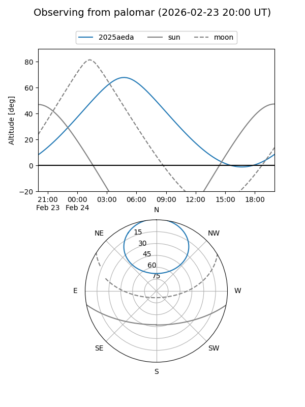
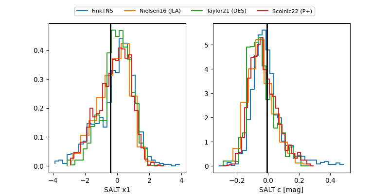

2025aeda
Target 2025aeda at 2025-12-31 17:59
Aliases and brokers:
FINK: link
Lasair: link
ALeRCE: link
TNS: link
YSE: link
alt names
ZTF25acegfnk (ztf,fink_ztf)
2025aeda (tns,yse)
ATLAS25omw (atlas)
Coordinates:
equatorial (ra, dec) = 107.6727,+55.49820
equatorial (HMS+DMS) = 07:10:41.44,+55:29:53.53
galactic (l, b) = (161.3462,+24.71338)
Flags:
Photometry:
last ztfr=20.38
3 ztfr detections
Lightcurve

Visibility


Additional plots
